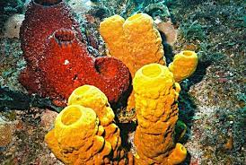
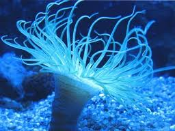
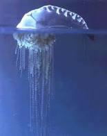
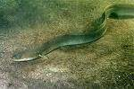

FAUNA MARINA SALVADOREÑA
En El Salvador, actualmente se encuentra una gran diversidad de especies marinas algunos ejemplares son:
Esponjas (o poríferos).
Porifera son un filo de animales invertebrados acuáticos que se encuentran enclavados dentro del Subreino Parazoa. Son mayoritariamente marinos, sésiles y carecen de auténticos tejidos. Son filtradores gracias a un desarrollado Sistema acuífero de poros, canales y cámaras. Existen unas 5.500 especies de esponjas en el mundo, de las cuales solo unas 150 viven en agua dulce. Se conocen fósiles de esponjas una Hexactinélida desde el Período ediacárico Neoproterozoico o Precámbrico superior. Se consideraron plantas hasta que en 1765 se descubrió la existencia de corrientes internas de agua y fueron reconocidas como animales y tienen digestión intracelular.

Anémonas de mar o actinias (Actiniaria) son un orden de antozoos hexacorales
Son animales sésiles que se fijan al substrato marino, a simple vista pueden parecer flores de exuberantes formas y colores. Las anémonas son animales, y además, predadores.

Medusas marinas.
(También llamadas aguamalas), son organismos marinos pertenecientes al filo Cnidaria y al de los Celentéreos; de cuerpo gelatinoso. Las medusas son criaturas marinas que tienen un cuerpo casi transparente en forma de campana con estructuras parecidas a dedos llamadas tentáculos. Las células urticantes que se encuentran dentro de los tentáculos pueden causar daño en caso de entrar en contacto con ellas.

Tortugas marinas.
Son reptiles con caparazón que existen hace más de 150 millones de años y pudieron sobrevivir a todos los cambios del planeta. Tuvieron su origen en la tierra, pero poco a poco fueron evolucionando y adaptándose al medio marino, diferenciándose del resto de reptiles.

Ballena jorobada.
También conocida como la Yubarta, es una especie totalmente diferente a las demás Ballenas del grupo que frecuentan el Océano Antártico; es más pesada y robusta. Se encuentra en todos los océanos del mundo, desde el trópico hasta las regiones polares.

Caballito de mar.
Peces óseos (Teleósteos), estando clasificados en la misma familia que las agujas y peces pipa (Syngnathidae). Aunque la clasificación de las distintas especies de caballitos es muy problemática, todos están agrupados dentro de un mismo género, Hippocampus.

Mobula birostris.
conocida también como manta gigante, es una especie de pez cartilaginoso que ―a diferencia de la raya―, no posee aguijón venenoso en su cola. Puede llegar a medir más de 8 metros de envergadura y pesar 1400 kg. Tienen un cerebro grande que se mantiene caliente incluso cuando estas nadan en aguas más frías de lo habitual. Pueden vivir poco más de 50 años.

Pulpo. Orden de moluscos cefalópodos, cuyo nombre científico es Octopus vulgaris.
Carecen de concha y poseen ocho brazos. Son animales marinos carnívoros. Etimológicamente la palabra Octópoda, proviene del griego, octó, que significa ocho y podós, "pies".

Erizo de Mar.
Perteneciente al reino animal a la orden equinodermos. Ocupan la franja costera desde la zona intermareal hasta profundidades de 80 metros. Las primeras especies de erizos de mar aparecieron hace unos 200 millones de años.

Pepinos de mar.
Pertenece al mismo grupo Echinodermata que los Erizos de mar o las Estrellas de mar, presentan aspecto vermiforme, adaptados a la reptación y con el cuerpo de forma prismática pentagonal. Las zonas radiales van provistas de pies ambulacrales, estando más desarrollados los inferiores, que tienen función locomotora, mientras que los que se sitúan en los dos radios dorsales tienen una función sensitiva. La boca aparece rodeada de numerosos tentáculos muy ramificados. Los pepinos de mar poseen ampliaciones del intestino que funcionan como pulmones acuáticos.

Estrella de mar.
Conocido también como Asteroidea, son una clase del filo Echinodermata (equinodermos) de simetría pentaradial, cuerpo aplanado formado por un disco pentagonal con cinco brazos o más. Se conocen unas 2.000 especies vivientes.

Pez Globo.
Perteneciente a la familia de los Tetraodontidae, este enigmático pez es temido, a la par que admirado, por su capacidad de hincharse como una pelota en los momentos en los que se siente atacado por algún depredador. Este sistema de defensa se completa con el empleo de una sustancia extremadamente venenosa que invita a no tomar a la ligera lo que, a simple vista, parece un pequeño animal de lo más inofensivo.

Pargo(pagrus pagrus).
Es un pez comestible de carne muy rica y sabrosa. Habita el Atlántico desde las islas Británicas hasta el sur de Argentina, prefiriendo las regiones subtropicales a baja y media profundidad, aunque también se crían en piscifactorías para su consumo.

Pez Anguila.
Propio de las aguas fluviales para la época de su reproducción, abandonan las aguas dulces y penetran en el mar. Sus crías, conocidas como angulas luego de su nacimiento en las aguas saladas, hacen el camino que recorrieron sus padres vuelven a los ríos para su completo desarrollo.
El pez anguila es un pez que se lo encuentra en todos nuestros ríos y arroyos, prefiriendo los de poca correntada y agua más bien baja. Cava sus cuevas en las orillas y a ellas se retira en las horas de más calor. Abunda más en invierno que en verano, siendo la época de marzo a noviembre, cuando se le saca con más frecuencia.
